只給 MD 與原始資料，讓另一個 AI 自己完成
這次由獨立 AI 讀取 AGENTS.md 與 NASA Moon Facts，自行決定頁數、大綱、風格和版面。主代理沒有提供現成大綱或內容，也沒有改寫交付的簡報文字；主代理負責驗收、實際下載與發布。
測試結果：內容與分頁由獨立 AI 依 MD 完成；仍有規範落差。現有矩陣與時間軸部分正文為 13px，未達 MD 的 17px。這是本次試作找出的問題，沒有修改規則或事後重寫成品來掩蓋。
測試輸入與驗收範圍
下載檔共七頁、196 個原生可編輯物件，已用 PowerPoint 16.0 實際開啟。
輸入：專案位置、AGENTS.md、規則所指向的 DESIGN_CATALOG.md，以及 NASA Moon Facts 原文網址。獨立 AI 未繼承先前對話，也未讀取先前的太陽系成品。
四套風格的網頁畫面均實際渲染。下方右欄是按網站按鈕下載後，由桌面 PowerPoint 開啟產生的預覽；並非將網頁截圖當成PPT成果。PPT字形、行距與圓角仍可能與網頁不同。
01 · 月球保存了太陽系的歷史

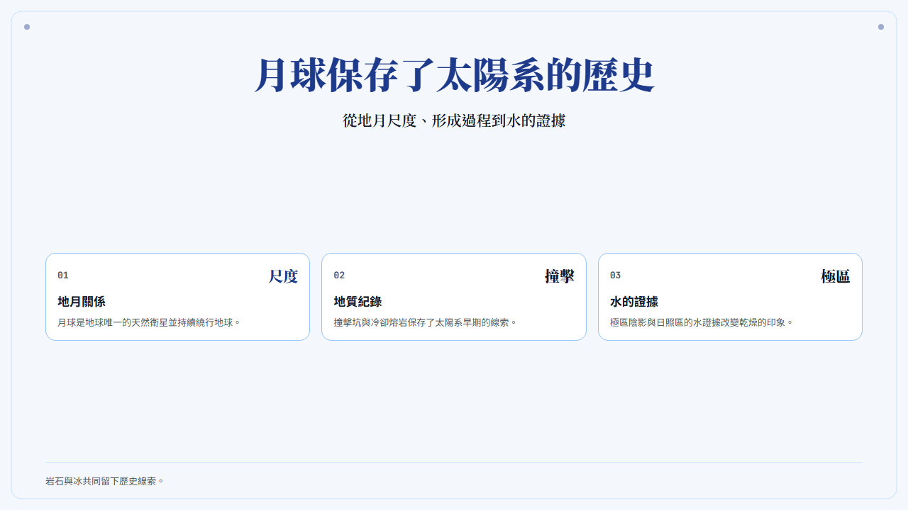

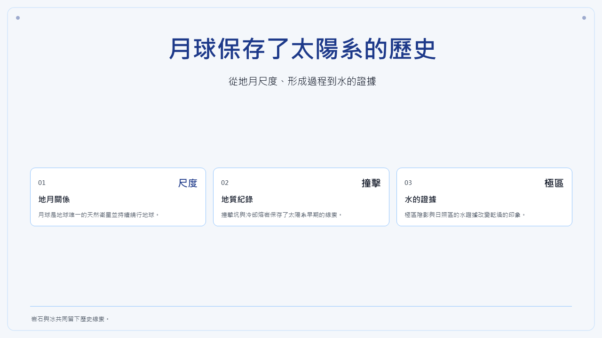
02 · 平均地月距離遠大於月球本身


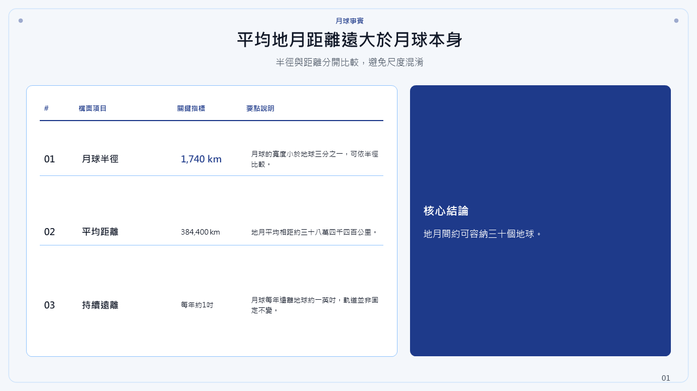
03 · 同一面朝向地球，不代表背面永遠黑暗

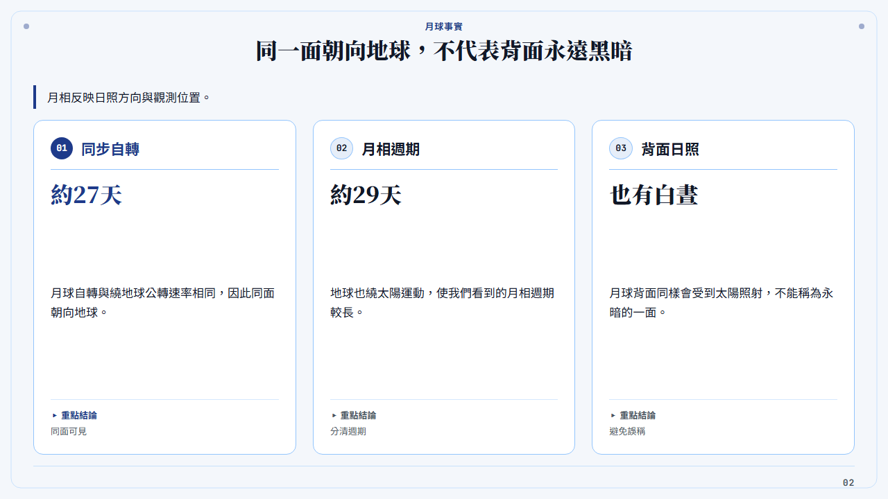

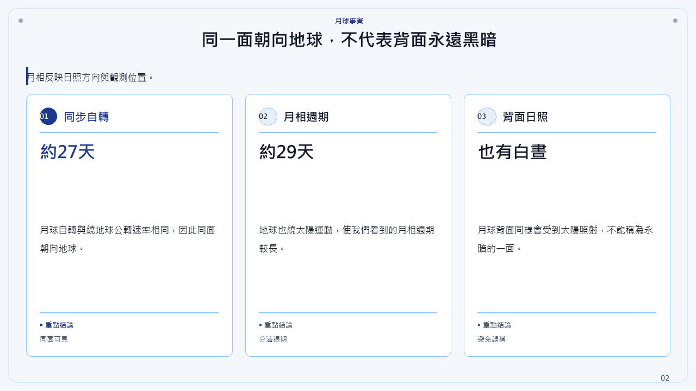
04 · 撞擊後的碎屑逐步形成月球外殼

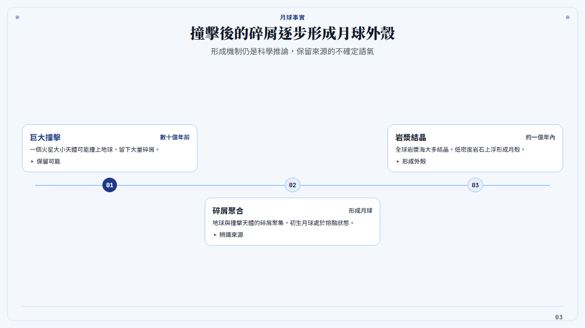

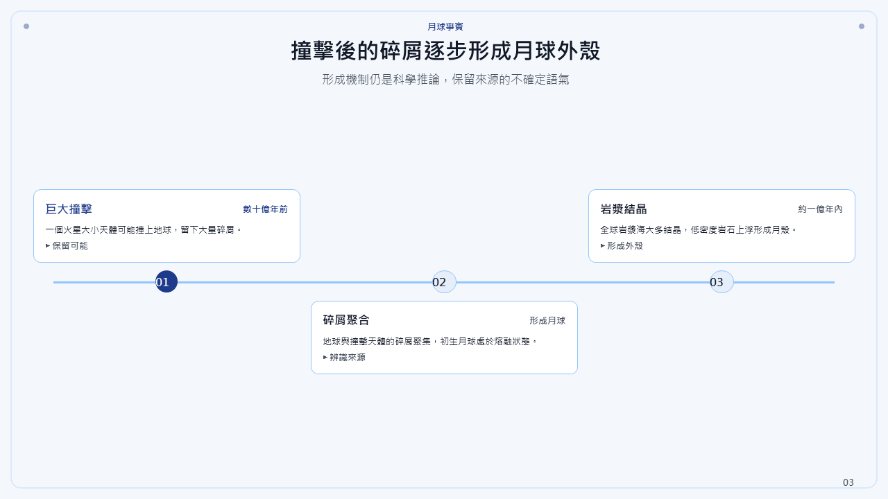
05 · 亮暗地形記錄不同的月球地質歷程


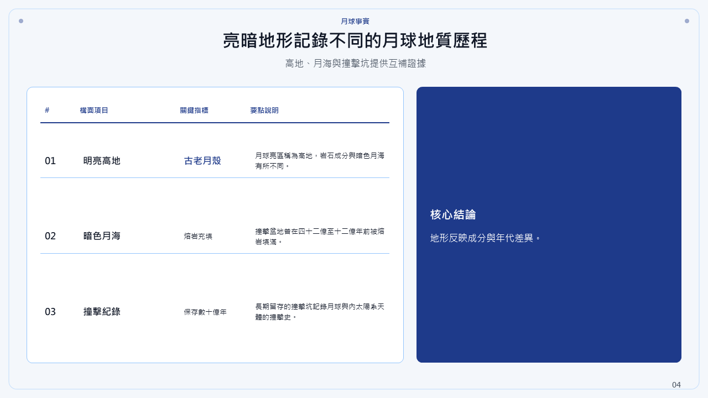
06 · 水的發現讓月球不再只是乾燥世界

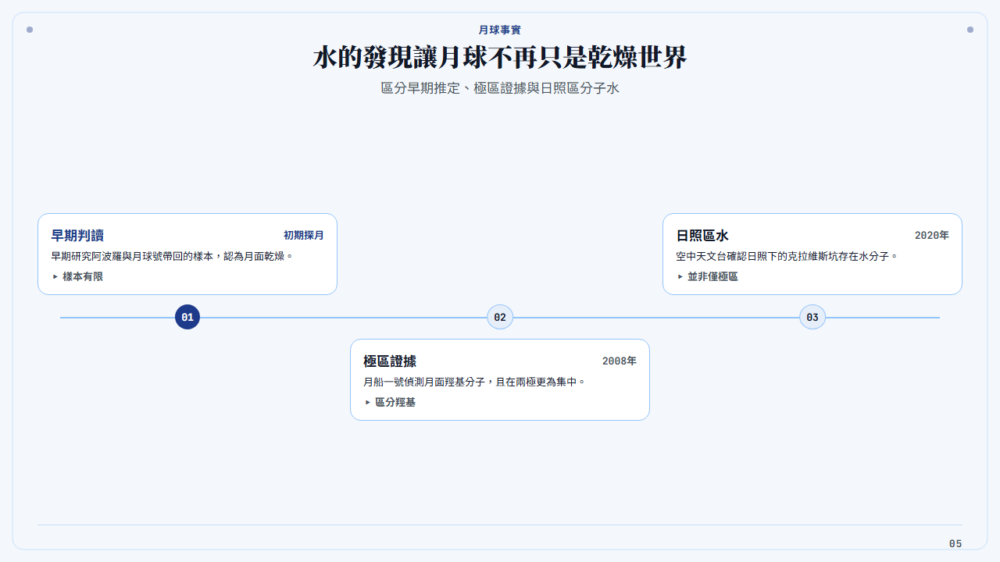

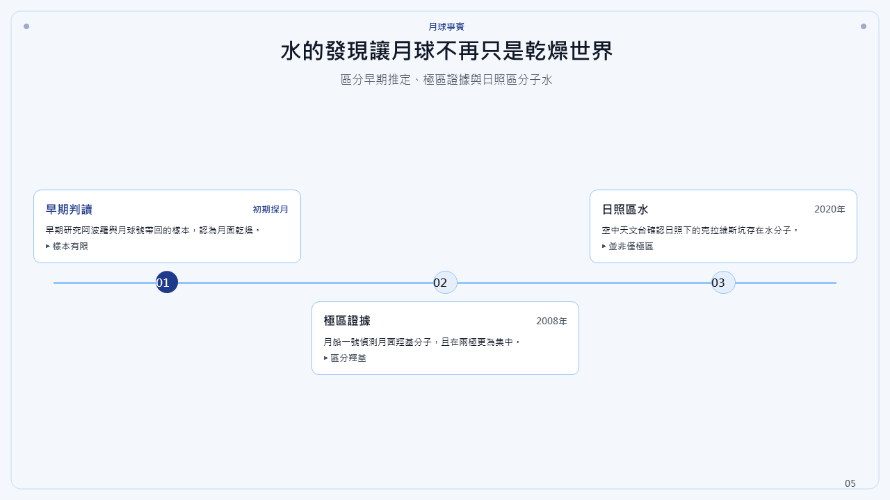
07 · 月面缺乏地球式的環境保護

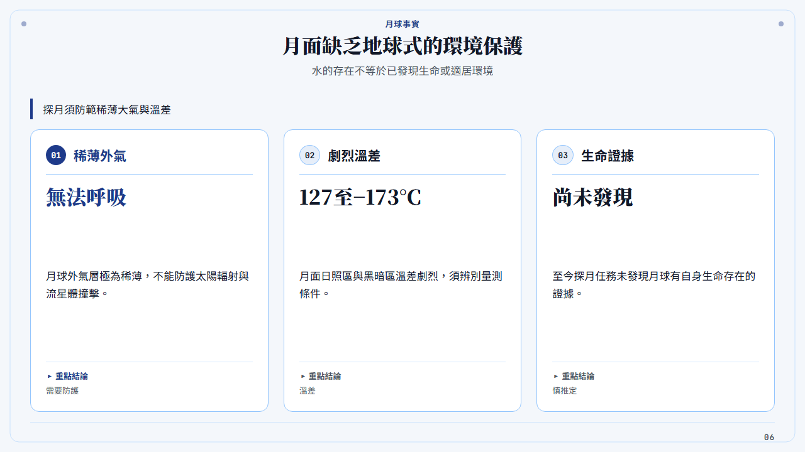

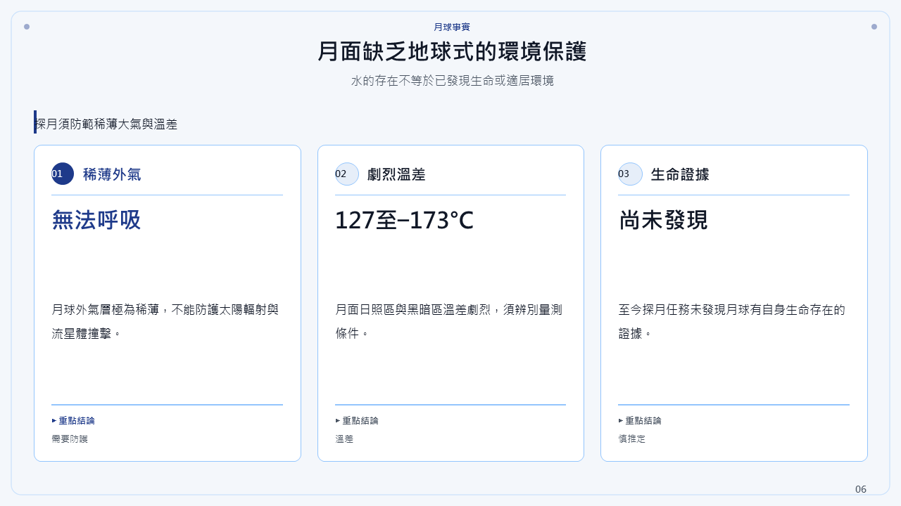